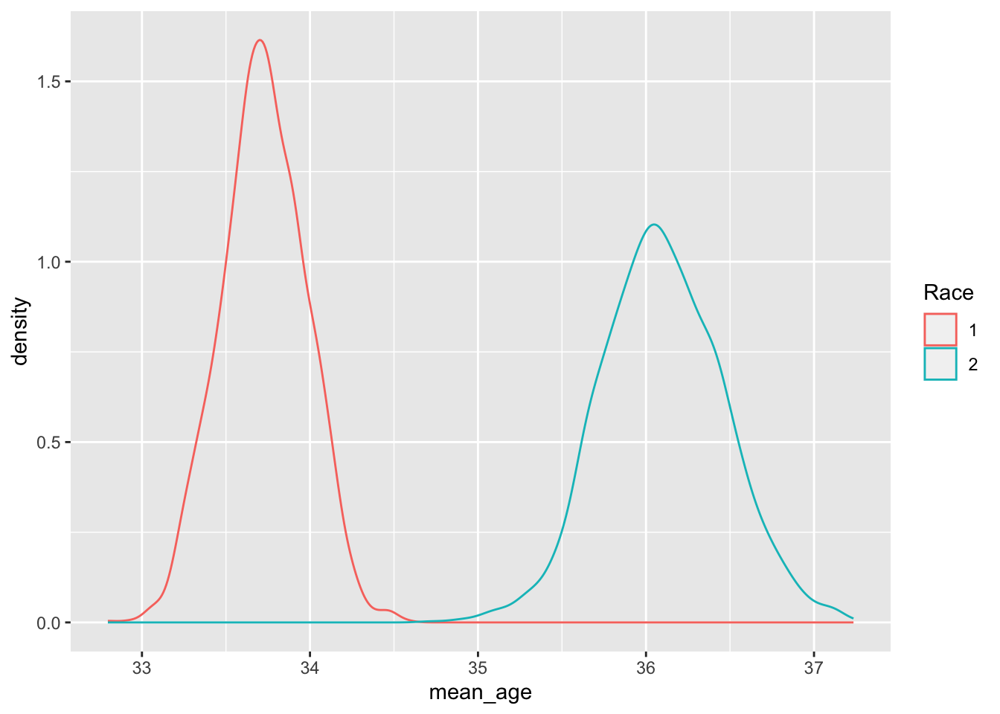

library("RSocrata")
library("RColorBrewer")
library("tidyverse")## ── Attaching packages ─────────────────────────────────────── tidyverse 1.3.2 ──
## ✔ ggplot2 3.4.0 ✔ purrr 1.0.1
## ✔ tibble 3.1.8 ✔ dplyr 1.1.0
## ✔ tidyr 1.3.0 ✔ stringr 1.5.0
## ✔ readr 2.1.3 ✔ forcats 1.0.0
## ── Conflicts ────────────────────────────────────────── tidyverse_conflicts() ──
## ✖ dplyr::filter() masks stats::filter()
## ✖ dplyr::lag() masks stats::lag()arrests <-
as_tibble(
read.socrata("https://data.cityofevanston.org/resource/25em-v4fn.json")
) %>%
mutate(
day_of_the_week = factor(day_of_the_week),
day_of_the_week = fct_relevel(
day_of_the_week,
c(
"Mon",
"Tue",
"Wed",
"Thu",
"Fri",
"Sat",
"Sun"
)
)
) %>%
separate(
col = arrest_date,
into = c("Year", "Month", "Date"),
remove = FALSE
) %>%
mutate(Year = as.numeric(Year),
age = as.numeric(age),
arrest_time = as.numeric(arrest_time),
street_number = as.numeric(street_number)) %>%
filter(Year > 2016)arrests_stats <- arrests%>%
filter(!is.na(age))%>%
summarise(
mean_age = mean(age),
sd_age = sd(age),
n = n(),
median_age = median(age),
margin = qt(0.975,df=n-1)*sd_age/sqrt(n),
ll = mean_age - margin,
ul = mean_age + margin)
ggplot(arrests, aes(x = age))+
geom_histogram(binwidth = 2)+
geom_vline(xintercept = arrests_stats$mean_age)## Warning: Removed 375 rows containing non-finite values (`stat_bin()`).arrests_ci <- arrests%>%
filter(!is.na(age))
t.test(age~1, data = arrests_ci)##
## One Sample t-test
##
## data: age
## t = 168.68, df = 4166, p-value < 2.2e-16
## alternative hypothesis: true mean is not equal to 0
## 95 percent confidence interval:
## 34.17029 34.97394
## sample estimates:
## mean of x
## 34.57211bootres <- 1:2000%>%
map(~sample(x = arrests_ci$age, replace = TRUE))
bootres_df <- bootres%>%
map_dfr(~as_tibble(.x), .id = "ITER")
ggplot(bootres_df %>%
filter(ITER == "1"), aes(x = value))+
geom_density()ggplot(bootres_df, aes(x = value, group = ITER))+
geom_density()bootres_df2 <- bootres_df%>%
mutate(ITER = as.numeric(ITER))
bootres_stats <- bootres_df2%>%
group_by(ITER)%>%
summarise(mean_age = mean(value),
sd_age = sd(value),
n = n(),
median_age = median(value),
margin = qt(0.975,df=n-1)*sd_age/sqrt(n),
ll = mean_age - margin,
ul = mean_age + margin)
ggplot(bootres_stats, aes(x = mean_age))+
geom_histogram()## `stat_bin()` using `bins = 30`. Pick better value with `binwidth`.ggplot(bootres_stats, aes(x = mean_age))+
geom_density()bootres_sd <- quantile(bootres_stats$mean_age, probs = c(0.025, 0.975))
ggplot(bootres_stats, aes(x = mean_age))+
geom_histogram()+
geom_vline(xintercept = bootres_sd[1])+
geom_vline(xintercept = bootres_sd[2])## `stat_bin()` using `bins = 30`. Pick better value with `binwidth`.arrests_whi <- arrests %>%
filter(race == "White")
arrests_ci_whi <- arrests_whi%>%
filter(!is.na(age))
bootres_whi <- 1:2000%>%
map(~sample(x = arrests_ci_whi$age, replace = TRUE))
bootres_df_whi <- bootres_whi%>%
map_dfr(~as_tibble(.x), .id = "ITER")
bootres_df2_whi <- bootres_df_whi%>%
mutate(ITER = as.numeric(ITER))
bootres_stats_whi <- bootres_df2_whi%>%
group_by(ITER)%>%
summarise(mean_age = mean(value),
sd_age = sd(value),
n = n(),
median_age = median(value),
margin = qt(0.975,df=n-1)*sd_age/sqrt(n),
ll = mean_age - margin,
ul = mean_age + margin)
arrests_bla <- arrests %>%
filter(race == "Black")
arrests_ci_bla <- arrests_bla%>%
filter(!is.na(age))
bootres_bla <- 1:2000%>%
map(~sample(x = arrests_ci_bla$age, replace = TRUE))
bootres_df_bla <- bootres_bla%>%
map_dfr(~as_tibble(.x), .id = "ITER")
bootres_df2_bla <- bootres_df_bla%>%
mutate(ITER = as.numeric(ITER))
bootres_stats_bla <- bootres_df2_bla%>%
group_by(ITER)%>%
summarise(mean_age = mean(value),
sd_age = sd(value),
n = n(),
median_age = median(value),
margin = qt(0.975,df=n-1)*sd_age/sqrt(n),
ll = mean_age - margin,
ul = mean_age + margin)
bootres_stats_bw <- bind_rows(bootres_stats_bla, bootres_stats_whi, .id = "Race")
bootres_sd_bw <- bootres_stats_bw%>%
group_by(Race)%>%
summarise(ave_age = mean(mean_age),
mean_ll = quantile(mean_age, probs = 0.025),
mean_hl= quantile(mean_age, probs = 0.975))
ggplot(bootres_stats_bw, aes(x = mean_age, group = Race, color = Race))+
geom_density()
ggplot(bootres_sd_bw, aes(x = Race, y = ave_age))+
geom_point()+
geom_errorbar(aes(ymin = mean_ll, ymax = mean_hl), width = .1)This procedure to find and graph the means for each iteration of the arrests data set worked, but it takes around seventy lines of code to complete. We tried to cut this down to around twenty lines which did below here.
race_age_data <-
arrests %>%
select(race, age) %>%
filter(!is.na(age), race %in% c("White", "Black")) %>%
split(.$race)
boot_res <-
1:2000 %>%
map_dfr(
~map_dfc(race_age_data, ~mean(sample(.x$age, replace = TRUE))),
.id = "iter"
) %>%
pivot_longer(cols = -iter, names_to = "race", values_to = "age")
ggplot(boot_res, aes(age, color = race, fill = race)) +
geom_density(alpha = 1/3)conf_int_res <-
boot_res %>%
group_by(race)%>%
summarise(
ave_age = mean(age),
mean_ll = quantile(age, probs = 0.025),
mean_hl= quantile(age, probs = 0.975)
)